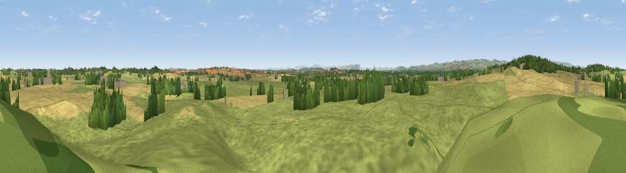

Viewpoint near Tetchill
#18486 in England · top 64% of its area beats it · near TetchillWhere it is
The exact computed spot (SJ 38275 32225). Click the marker for map links.
The view, rendered

A 360° render of this exact spot computed from the terrain model, tree cover and land cover — summer colours, afternoon light, calibrated against photographs of famous viewpoints. Real trees, hedges and buildings will differ in detail.
The panorama
Grey silhouette: terrain skyline in each direction (720 bearings, Earth curvature and refraction included). Dashed green: skyline with trees (+15 m) and buildings (+8 m) as obstacles. Blue strip: how far the ground is visible on each bearing.
Where the view opens
Wedge length = distance to the farthest visible ground on that bearing (vegetation-aware). Rings at 10, 25 and 50 km.
What fills the view
72% grassland · 21% cropland · 4% woodland · 2% water ·
Angular shares of the visible panorama (visual magnitude), not map area. Landscape diversity 0.35 (0–1 Shannon).
Key numbers
More beautiful places nearby
The staircase of upgrades: each row has a higher view potential than everything closer. Driving times are estimates from straight-line distance, calibrated against real road routing — check an actual route before setting out.
| Place | Direction | Drive | Score |
|---|---|---|---|
| Viewpoint near Ellesmere | NE · 4 km | ~9 min | 57.5 |
| Stanwardine Park | SSE · 8 km | ~16 min | 59.0 |
| Grug Hill | S · 9 km | ~18 min | 68.3 |
| The Cliffe | S · 12 km | ~22 min | 69.2 |
| Oliver's Point | S · 12 km | ~23 min | 71.1 |
| Viewpoint near Bronygarth | WNW · 13 km | ~23 min | 74.7 |
| Viewpoint near Trefonen | WSW · 15 km | ~26 min | 75.0 |
| Grinshill | ESE · 16 km | ~28 min | 75.2 |
52.88393, -2.91872 · source: screening · position refined by local search. Computed location — check access rights before visiting.